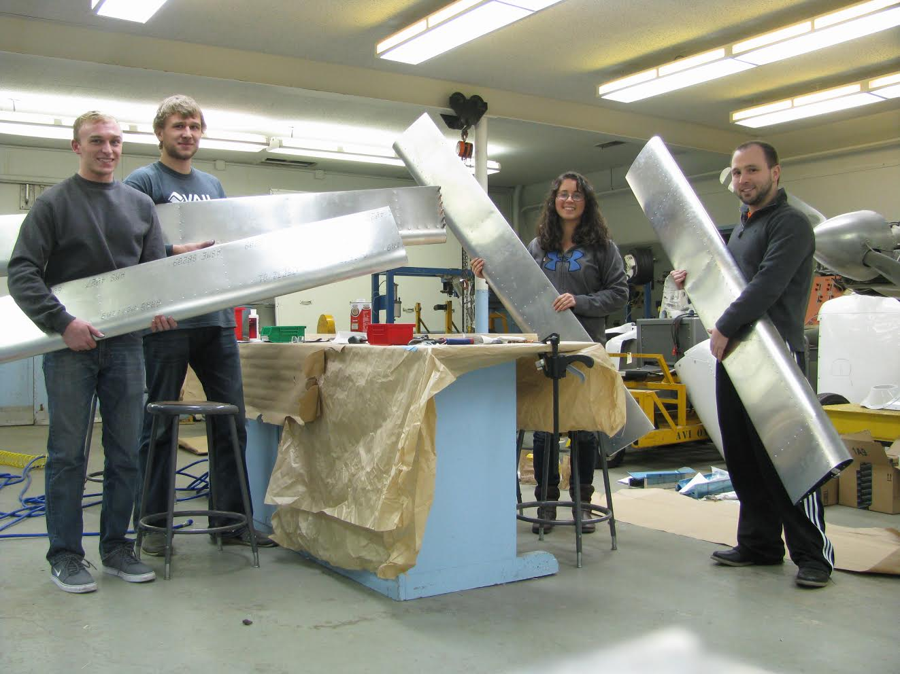

Recent News
January 2014
Show/Hide
January 26th, 2014: Kick off the New Semester with SAB!
Welcome back to campus!
A small team came over break and completed the flaperons! Thanks to Jessie Lauzon, Brian Binder, and Luke Toczek to dedicating a week before school! We hope to continue our progress into this semester with your help.
We are ready to start an exciting new semester and hope you will be joining us. SAB is recruiting for a variety of different positions from builders and project managers to leadership positions in our media team and new Assistant Vice Presidents.
To kick off the year we are having several social events and our first general meeting Thursday the 30th at 6pm in 103 Talbot. Also Come out to Joe's brewery Tuesdays at 6pm for half price burgers and We will also be participating in the UIUC Activity Day (Tue 28th 10am-3pm) so come say hi.
Getting involved with SAB is a great way to meet other engineers and gain experience that recruiters love to see! Speaking of recruiters, we'd like to remind everyone to get their resumes ready as we'll be creating a resume pool to distribute at the fair via Dropbox. More information to come.
Additionally, keep your eyes on this page for an upcoming t-shirt sale which will feature our logo.
Tailwinds,
Andy Putch,
Vice Presidente

October 2013
Show/Hide
October 21st, 2013: Fall Proceedings
So much has happened this fall. We are thrilled to have over 100 new members from 20 different majors joining us. With a large group of news students comes new and exciting projects for SAB. In addition to the Construction, Project Management, and CAD Teams, we are excited to introduce our Computer Vision Team, Educational Outreach Projects, and Special Projects Team. SAB is also now offered as a one credit hour free elective by the UIUC Department of Aerospace Engineering. Students that take this course for three semesters in a row will be able to exchange their three credit hours of free elective for three hours of technical elective credit.
From the Business Team, we are happy to say we have received funding from SORF, the UIUC MechSE Department, Engineering Council, Northrop Grumman, and the Illinois Space Grant Consortium. A huge thank you to all our sponsors! With their tremendous backing we have acquired a complete Zenith CH 750 airframe kit and 20 training tool boxes and 20 training airfoil sections. Five of our students attended an event hosted by Zenith Aircraft Company where we met with many industry representatives, built the rudder section of our aircraft, and took home our kit.
Construction on the horizontal stabilizer begins tomorrow and things are only going up from there with pneumatic rivet guns to be purchased, automated dimpling machines to be designed, and lots of construction to take place.
Tailwinds,
Andy Putch, Vice President
June 2013
Show/Hide
June 23rd, 2013: Reporting on the Past, Continuing on to the Future
We haven't rolled out an update for a while, but rest assured that progress has continued. We've put up new pages on the website to give a better idea of exactly what we've been up to. I would particularly recommend the
Build Process page to gain an understanding of exactly what we'll be doing this year. That page will also act as a good primer to introduce several of our other initiatives.
The influx of new members is something we're all very excited about. The committees have each prepared events and roles to be filled by interested candidates this fall. Several of those events may be found on the
Events and Social page.
Many of our members are now pursuing internships in relevant fields. For several of our members working now in the aerospace manufacturing industry, SAB has provided an invaluable source of knowledge. The project has given its involved members a substantial base in sheet metal manufacturing along with project management and quality assurance.
These internships are also likely to generate the skills and background needed to accomplish all of our lofty goals. Several of our members are being trained extensively in computer aided manufacturing (CAM) techniques, which will prove invaluable not only in our project management approaches, but also in the modeling of the aircraft for finite element analysis. Other members have found themselves working on public government research projects. We hope to take use of technologies on the cutting edge, and ideally develop them still farther.
Students: come to our meeting this fall! Weaker souls may want to bring some dramamine, we'll be taking a ride sponsored by
Prezi.
Zach Cox, Build Director
March 2013
Show/Hide
March 28th, 2013: Project Management and Interorganizational Involvement
We're back from Spring Break and in a great place to continue. Several of our officers attended the
well renowned Goddard Memorial Dinner in Washington, DC at the generosity of the American Astronautical
Society with the Illinois Space Society. We've emerged from this event with a great idea of where our initiatives are heading in the
industry.
On the construction side, we've now received twenty training toolbox kits, allowing the training and
induction of new builders to begin. In our efforts to take use of the large number of students
interested in the project, we've restructured our approach to the build. Jon Stricker, with extensive
experience managing student projects on campus, has set forth a step by step guide (with supplemental material) to
constructing the training toolbox.
In contrast to Van's Aircraft's method of abstractly describing the ultimate goal, these instructions
will explicitly describe the methods on construction. Training new members using this system will
allow SAB to perfect our methods so that this management style may be taken to RV-7 construction.
Our project presents several problems in resource management that are far from unique in a
professional setting. Issues such as limited hours of construction, lack of sufficient tools, and
transportation issues may all be mitigated by proper planning. One of our focuses has been on
allowing concurrent (multi-builder) construction on a daily basis. This will allow the project to
take shape at pace, a goal mandated by the 2000 hour construction length. Planning construction to
this degree will allow an uncapped number of builders to work on the project, with construction
being overseen by a slightly larger pool of build managers, functioning now as foremen. The result
is an opportunity for construction to take place for several hours a day, every day, safely
and effectively. All of our construction officers are excited to see the system be implemented
full scale, formally starting with the construction of the rudder in approximately three weeks time.
Student Aircraft Builders was recently inducted into Engineering Council, a group committed to
exploring projects encompassing several student groups. That's a goal that SAB shares. Several of our
burgeoning ideas would best be seen to completion by existing structures in other organizations. We
will be looking into multiorganizational collaboration extensively in the coming weeks.
Zach Cox, Build Director
February 2013
Show/Hide
February 25th, 2013: Processing Applications and New Initiatives
A few opportunities to put our name out in the University encouraged the extension of the application. Unfortunately, this resulted in an effective delay of 2 weeks, however the additional interest has proven well worth the delay.
With our efforts to spread student awareness of the project fulfilled, SAB officers have begun to process applications. We're thrilled with the quality of our applicants. I know that the people we'll be bringing on will do good work, my greatest hope is that these members will share in the passion that has struck the rest of us. Student Aircraft Builders is brand new, and new perspectives are crucial to continued expansion. With the amount of interest in the project, we're eager to fully utilize the time and talent of our members. We'll be actively encouraging new ideas and initiatives from our officers, old and new, so that we may accomplish this.
From our applications, we have found that we have just shy of 50 students interested in construction. However we currently only have the capacity to handle 12 - 15 builders with our optimized structure. We've started sending out emails asking for schedules of interested candidates, and expect to begin construction on the training kits when they arrive Monday, March 4th.
Tools and supervision restrict the rate of expansion in construction, but we have no such issues elsewhere. Our budget is the largest impedance to expansion, so we'd love to see people coming in to work with us on the business end, as well as educational outreach and documentation. The project can't succeed without strong support from these guys.
There are some awesome aspects to this project that allow for further expansion, and we want to use them! In the past month, we've already begun to explore several new directions which have been presented to us by our members. One of those ventures prompts the following request: Please let us know if you're interested in CAD work. Interested members would work with a team to fully CAD the RV-7A as it is being built (most likely in ProEngineer 5.0).
There are a few more preliminary ideas that may or may not take shape. As a means of testing the waters, students please take a look at the list below. If you have experience, or are very interested in gaining experience in the following, shoot me an email at zcox2@illinois.edu. We can't make any promises on the development of any of the below, but we'd like to see what support we may have. If we have members with valuable skills, we want to use them.
- Welding (particularly TIG with aluminum, but any experience will be valuable)
- MATLAB with OpenCV (Computer Vision)
- Wiring Avionic Systems
- Properties of aluminum (and other metals) after cold work / strain hardening
There's a lot of potential in this project, help us take full use of it.
Zach Cox, Build Director
February 10th, 2013: Planning and Structuring
Our first general meeting Wednesday turned out just as well as we'd hoped. A room with a 110 person capacity
looked fuller than most lectures. Attendees showed great enthusiasm; our greatest concern at the moment is
properly handling the interest that we've received. Our budget limits our number of builders, and the rate at
which we can train them. Project Manager Jon Stricker has begun organizing a building plan to make full use
of builders and other technical members.
Project planning gave us the excuse to head out to the hangar and get some good work done. Jon needed the
opportunity to begin estimating the length of time certain tasks would take. On the the build managers' side,
we had decided to experiment with a few different styles of construction. So Friday evening we had all three
build managers working on the horizontal stabilizer. Unfortunately, communication of the nuance of each step
in the plans usually leads to issues. Each step was completed, but construction was actually slower than a
single person working alone.
Saturday, Build Manager Andy Myrna and myself tried working individually. Andy worked on the vertical
stabilizer and I continued working on the horizontal. We were able to work very efficiently on our respective
tasks and assist each other on a few steps that required a helping hand. We did, however, run into a few
severe bottlenecks with our tools. One particular set of pliers caused over an hour of delay. So we've
identified the largest problems, and have begun working them into the budget. The plier set ($5) is already
on its way. There remain a few issues that are considerably more expensive to repair. As our prime sponsors
are departments of the university, resolving issues we have training members is the first concern. We hope
to have everything set by the time our new builders are trained.
We are continuing to run into issues using our allocated funds. Despite recognizing a number of needed
purchases (including the wing kit), we have little to no access to our own money. We expect to see a
conversion of our account into a more manageable system very shortly, ideally this week.
This weekend will be largely dedicated to creating applications that will help us place interested
candidates in positions that will best benefit both the students and SAB. In addition, rigid safety
protocols will need to be cemented before builder training proceeds. The protocols decided over this
weekend will be implemented by Feb 18th, when training is expected to commence.
With interest at this level, we're eager to use every student to the greatest extent of their ability.
Having this much excitement revolve around the project is a confirmation of our projections. Everything
continues as planned.
Zach Cox, Build Director
February 2nd, 2013: Construction Begins
Friday, several of our members took a trip out to the hangar, it was finally time to start construction.
To start us off, some tool organization and bench tool assembly was required. Following that, there was
nothing to stop us from beginning on the Rear Spar Assembly.
All five Oshkosh attendees were able to meet and teach several of our other members some of the basics. The
first step of construction involved shaping of the aluminum spar reinforcement bar with the belt sander and
bench grinder, followed by deburring and hole enlargement. We were able to assemble the entirety of the rear
spar, pictures can be found in the Construction Log.
The trip was enlightening in several respects. We found out how well our build manager system is likely to
work; relatively simple tasks can be delegated for extended periods of time. One technically knowledgeable
member can easily direct up to about 4 or 5 builders, while keeping downtime to a minimum.
Travel will continue to be a headache. The airbus currently only runs until 7 pm on weekdays, and 5 pm on
weekends. If we'd like 30-40 hours of work per week, we'll have to rely fairly heavily on the cars of our
members, an imperfect solution. Extension of the hours has been requested, but the quickest we could possibly
see any results is weeks away.
We also found that we would need to procure some additional tools if we'd like to prevent time-wasting
bottlenecks. Drilling caused the greatest issues, just about everything else flowed very well. There were a
number of basic workshop amenities, such as a shop vac, that would add to our needs. Fortunately, there are
a variety of short term solutions that will suffice while we cement the necessity of these expenses, and the
budget is built to handle them in any case.
All in all, a great first day. We got a great look at how the project can proceed this semester, and will be
able to plan accordingly. Our building plan looks like it's spot on, a very reassuring fact. Construction
continuing efficiently once full scale construction begins will depend on the budget. We've still got
plenty of work ahead of us.
Zach Cox, Build Director
January 2013
Show/Hide
January 28th, 2013: Last Minute Trip to Oshkosh
Great news all around! Following a meeting Thursday morning, SAB was granted $3000 from the
Aerospace Engineering Department. This gave us the ability to put money down on the wing
section ($1800) with money left over for a workshop! I took a look at the nationally popular,
Experimental Aircraft Association SportAir Sheet Metal Workshop. Registration for the
event held over the 26th and 27th was fortunately still open.
Last minute texts were sent out to members who had shown intense interest in the workshop and
invested gratuitous amounts of time in the creation of the website. The EAA generously
offered a discounted rate, which allowed us to make the trip up to Oshkosh.
The workshop, instructed by Buck Greenlaw, will prove to be invaluable to our build managers.
In addition, the spirit at EAA was infectious. As it was described to us, one of the
workshop's greatest offerings was the confidence to proceed in the attendee's respective
projects. We can now certainly validate that claim.
The workshop showed us that we'll definitely need to look into appropriation of scrap sheet
aluminum and rivets. Fortunately most of the RV-7 has been pre-punched, and there'll be far
more care and redundant oversight taken during actual construction. Bottom line, we'll be
heavily training everyone. With the need for training I expect full scale, routine
construction to proceed in slightly less than 3 weeks.
Zach Cox, Build Director